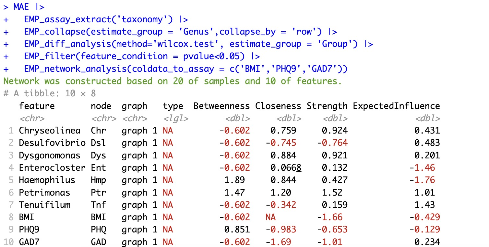

6.12 网络分析 EMP_network_analysis
模块 EMP_multi_analysis 旨在构建特征之间的网络关系，以分析它们的相互作用，并识别关键特征节点。该模块不仅评估单组学内部特征的关联性，还进一步解析多组学之间的网络交互关系，从而提供更全面的系统生物学视角。
6.12.1 单组学网络分析
🏷️示例：
1.属级别差异菌与表型数据的网络分析
注意：
参数
参数
coldata_to_assay可以将表型数据纳入网络分析中MAE |>
EMP_assay_extract('taxonomy') |>
EMP_collapse(estimate_group = 'Genus',collapse_by = 'row') |>
EMP_diff_analysis(method='wilcox.test', estimate_group = 'Group') |>
EMP_filter(feature_condition = pvalue<0.05) |>
EMP_network_analysis(coldata_to_assay = c('BMI','PHQ9','GAD7'))

2.可视化节点重要性
MAE |>
EMP_assay_extract('taxonomy') |>
EMP_collapse(estimate_group = 'Genus',collapse_by = 'row') |>
EMP_diff_analysis(method='wilcox.test', estimate_group = 'Group') |>
EMP_filter(feature_condition = pvalue<0.05) |>
EMP_network_analysis(coldata_to_assay = c('BMI','PHQ9','GAD7')) |>
EMP_network_plot(show='node')
3.此时可以根据节点重要性提取最重要的2个菌
MAE |>
EMP_assay_extract('taxonomy') |>
EMP_collapse(estimate_group = 'Genus',collapse_by = 'row') |>
EMP_diff_analysis(method='wilcox.test', estimate_group = 'Group') |>
EMP_filter(feature_condition = pvalue<0.05) |>
EMP_network_analysis(coldata_to_assay = c('BMI','PHQ9','GAD7')) |>
EMP_filter(feature_condition = top_detect(Betweenness,2))
6.12.2 多组学网络分析
🏷️示例：
1.构建差异菌和差异代谢产物的网络分析
注意：
参数
参数
threshold可以选择具有统计学意义的边或者校正P值后的边。(默认为threshold='sig')k1 <- MAE |>
EMP_assay_extract('taxonomy') |>
EMP_collapse(estimate_group = 'Genus',collapse_by = 'row') |>
EMP_diff_analysis(method='wilcox.test', estimate_group = 'Group') |>
EMP_filter(feature_condition = pvalue<0.05)
k2 <- MAE |>
EMP_collapse(experiment = 'untarget_metabol',na_string=c('NA','null','','-'),
estimate_group = 'MS2kegg',method = 'sum',collapse_by = 'row') |>
EMP_diff_analysis(method='DESeq2', .formula = ~Group) |>
EMP_filter(feature_condition = pvalue<0.05)
(k1 + k2 ) |>
EMP_network_analysis(threshold='sig')
2.网络分析可视化
注意：
①参数
②参数
③更多可视化参数可以在qgraph函数中查阅
①参数
node_info可以根据每个组学的rowdata指定节点的详细注释。②参数
threshold这里有别于EMP_network_analysis的参数，是指选择显示系数绝对值大于多少的边。③更多可视化参数可以在qgraph函数中查阅
(k1 + k2 ) |>
EMP_network_analysis(threshold='sig') |>
EMP_network_plot(show = 'net',layout = 'spring',
shape='diamond',
edge.labels=TRUE,edge.label.cex=0.4,
vsize = 5,threshold = 0,
node_info = c('Phylum','MS2class'),
legend.cex=0.3,label.cex = 1,label.prop = 0.9,font=2)